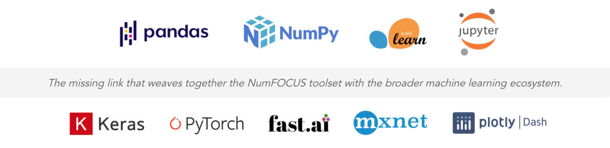

Mission & Community¶
Why Does AIQC Exist?¶
Expedite Earth-saving scientific discoveries.
Make deep learning more accessible to researchers by reducing the amount of programming and data science know-how required to perform deep learning. This unattainable skillset trifecta causes machine learning to be underutilized in science.
Radical scientific progress is needed to prevent the destruction of Earth’s resources. When coupled with ballooning population growth, shortages have the potential to cause widespread conflict. We can’t physically transport 10 billion people off of this planet. So, in order to survive both here and elsewhere, we need major advances in non-linear fields such as: synthetic biology (to heal the earth), vertical farming (to feed its people), pervasive, small-scale nuclear power (to fuel its progress), and the technology to foster Democracy [secured blockchain & satellite internet] to shake off the chains of tyranny. Deep learning has the power to accelerate these discoveries and improve our decision-making by revealing the laws of nature through data-driven pattern recognition. We can achieve all of these things, but first we have to choose to do them. Kennedy: peace, moon
Bring the scientific method to data science.
Make machine learning less of a black box by implementing a “Quality control (QC)” process comprised of validation rules around reproducible workflows. Submit an AIQC file alongside publications and model zoo entries as a proof.
This toolset provides research teams a standardized method for ML-based evidence, rather than each researcher spending time cobbling together their own approach.
Break down walled gardens. Science should be open.
The majority of research doesn’t happen in the cloud, it’s performed on the personal computers of individuals. We empower the non-cloud researchers: the academic/ institute HPCers, the remote server SSH’ers, and everyday desktop warriors - with the same quality ML tooling as present in public clouds (e.g. AWS SageMaker) and enterprise apps (e.g. DataRobot, C3). It’s going to take all of us to overcome the challenges that we are currently faced with, so we should all have access to the best tools.

Community¶
Lend a hand in building the next generation of open source machine learning, bolster your resume, beef up your skills, come learn something new, or just talk shop!
Jump in the Slack channel in the links below to say hello. All are welcome.
Machine learning is a broad space with plenty of challenges to solve. Have a look at the :doc:Compatibility Matrix to see what needs to be addressed and let us know if you want to get involved. Help build something that isn’t lame.
We plan to host monthly dev jam sessions and data science lightning talks. It’s more fun to hack in a group.